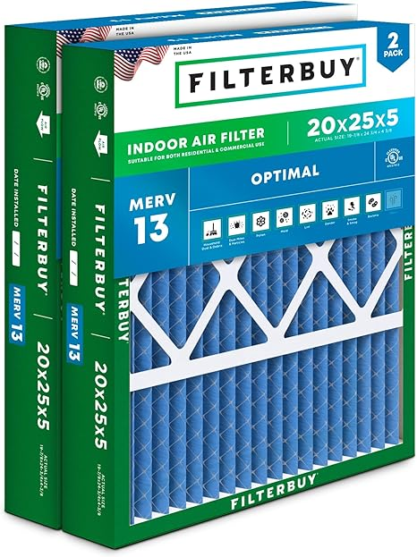
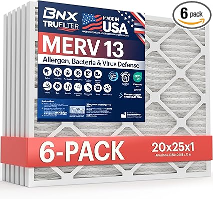
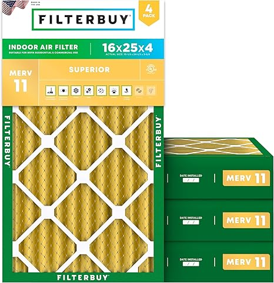

← besthomefilters.com
Homefilters in 2026: Worth the Upgrade?
May 2026
The honest truth about homefilters: most products are decent. What separates good from great are details you won't find in a product listing.
Real-World Tips
- The 3-star reviews are gold. They're usually the most balanced and honest takes on homefilters.
- Check "Frequently Bought Together" — it shows what extras you might need for your homefilters.
What Actually Matters
- Warranty — Real warranty coverage (1+ year) signals a manufacturer that stands behind their product.
- Price trends — homefilters prices fluctuate. Track your picks and buy when the price dips.
- Brand track record — Established homefilters brands have more to lose from bad products. That accountability matters.
- Return policy — Easy returns mean lower risk. Even well-reviewed homefilters might not suit your situation.
- Total cost of ownership — The cheapest homefilters upfront can be the most expensive over time with replacements and accessories.
Editor's Picks

→ #5 — BNX TruFilter 20x20x1 Air Filter MERV 8 12-Pack MADE IN USA Dust Pet — Top rated

→ #4 — Simply 20x20x1 Air Filter MERV 8 MPR 600 12 Pack Furnace HVAC — Highly reviewed
→ #2 — Filtrete 20x25x1 Air Filter MERV 5 6-Pack AC Furnace HVAC Home — Editor's pick
→ #1 — Simply 20x20x1 Air Filter MERV 8 MPR 600 6 Pack Furnace HVAC — Fan favorite

→ #3 — Simply 12x20x1 Air Filter MERV 8 6 Pack Home AC Furnace HVAC — Fan favorite
The Bottom Line
The best homefilters is the one that fits your needs and budget. Our detailed comparisons on besthomefilters.com make that call easier.
Affiliate Disclosure: As an Amazon Associate, we earn from qualifying purchases. This doesn't affect our recommendations.